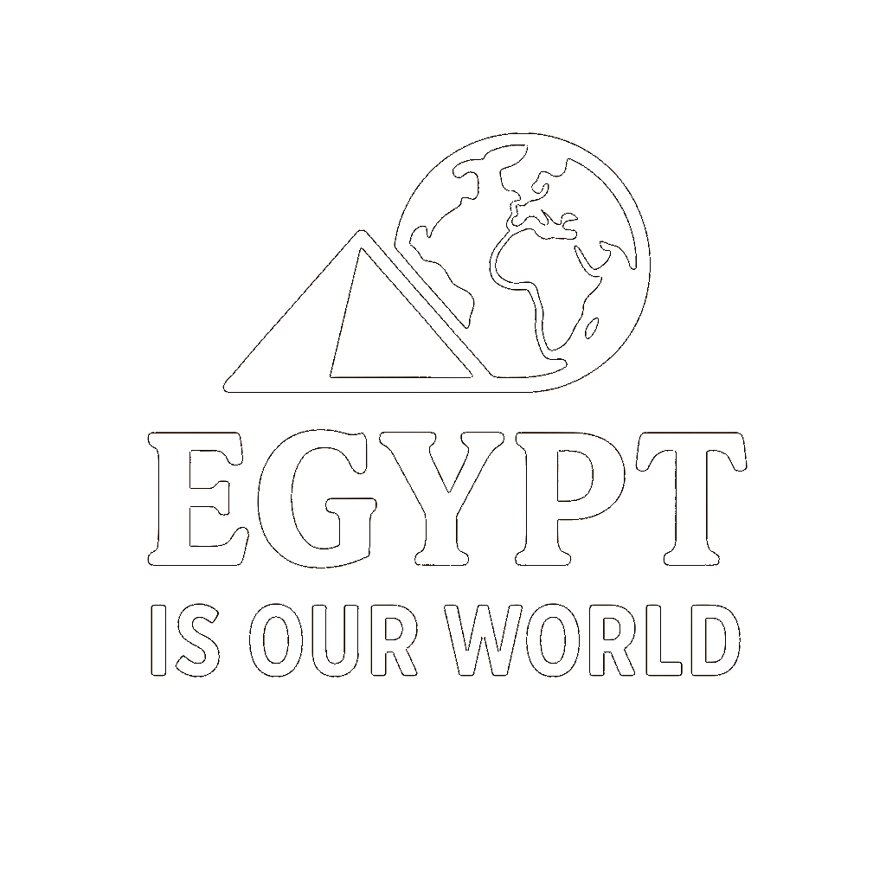
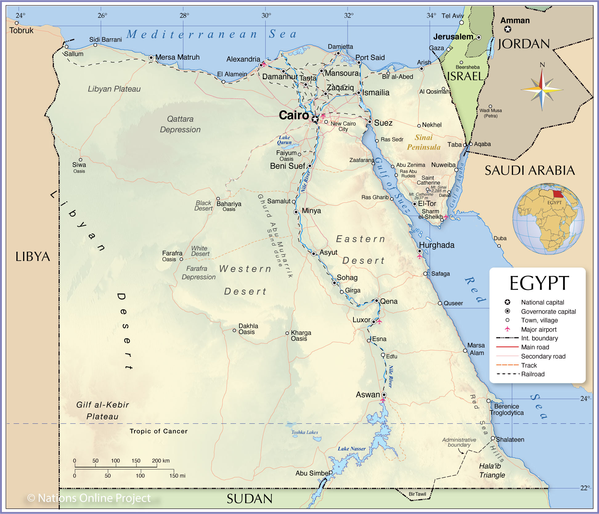
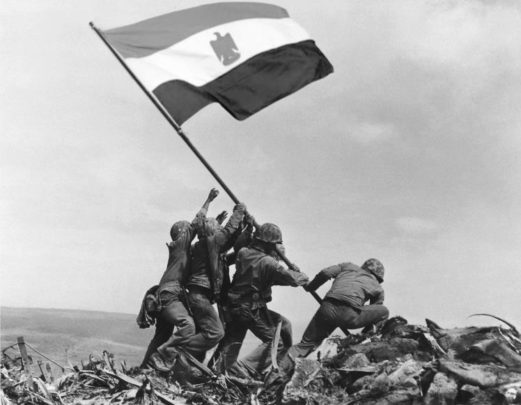
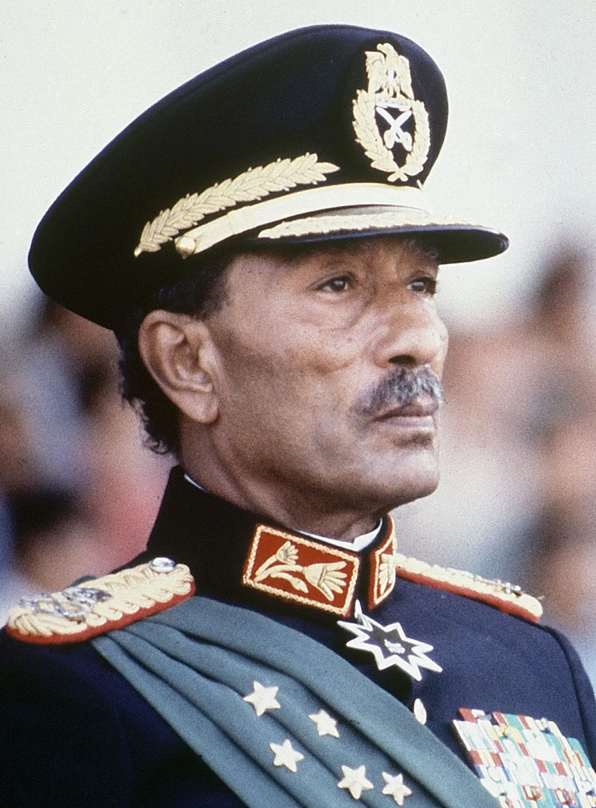

Egypt is located in the northeast corner of Africa, with part of its land, called the Sinai Peninsula, extending into Asia. It is the only country that connects the two continents. Covering approximately 1 million square kilometers, Egypt is roughly the same size as Texas and California combined. Most of its people live near the River Nile, the world’s longest river, which gives life to the deserts of Egypt. Cairo, the capital city, is one of the largest cities in Africa and the Middle East. Egypt is known for its ancient civilization, the Great Pyramids of Giza, and its deep cultural history, which still fascinates people worldwide.


The October War, also known as the Yom Kippur War, was one of the most significant and proud moments in Egypt’s modern history. It began on October 6, 1973, when the Egyptian army, under the leadership of President Anwar El-Sadat, launched a surprise attack on Israeli forces that had occupied the Sinai Peninsula since the Six-Day War of 1967. For six years, Egypt had been preparing to regain its lost land and restore national dignity, and the war marked the beginning of that long-awaited effort. The attack was launched during the holy month of Ramadan for Muslims and on Yom Kippur, the holiest day in the Jewish calendar, which made it a complete surprise for Israel. At exactly two o’clock in the afternoon, Egyptian soldiers crossed the Suez Canal in one of the most brilliantly planned military operations in history. They used water pumps to break through the massive Bar Lev Line, a heavily fortified sand barrier that Israel believed was impossible to cross. Within hours, the Egyptian army had captured large areas on the eastern side of the canal and raised the Egyptian flag proudly over Sinai. The October War was not only a military success but also a moment of national unity. Millions of Egyptians supported the army with strong faith and determination, believing in the right to reclaim their homeland. The war demonstrated the bravery, discipline, and intelligence of the Egyptian armed forces. It also restored Egypt’s confidence after the difficult defeat of 1967. President Sadat’s decision to go to war was risky but necessary, as it showed the world that Egypt would never give up its occupied land. Internationally, the war drew attention from many countries. The United States and the Soviet Union were both involved indirectly, supporting their allies with weapons and supplies. After weeks of intense fighting and heavy losses on both sides, a ceasefire was reached on October 25, 1973, under the supervision of the United Nations. Although the war ended without a complete military victory, it was a political and psychological victory for Egypt, proving that the Israeli army was not invincible. The aftermath of the October War changed the course of Middle Eastern history. It opened the door for peace negotiations between Egypt and Israel. These talks eventually led to the signing of the Camp David Accords in 1978, followed by the Egypt-Israel Peace Treaty in 1979. Through these agreements, Israel returned the Sinai Peninsula to Egypt, making Egypt the first Arab country to regain its occupied land through both war and diplomacy. Today, the October War remains a source of national pride and is celebrated every year in Egypt as Armed Forces Day on October 6. It stands as a symbol of courage, unity, and determination, reminding every Egyptian of the power of faith and perseverance. The war proved that even against great odds, the will of the people and the strength of their unity can achieve victory and peace.